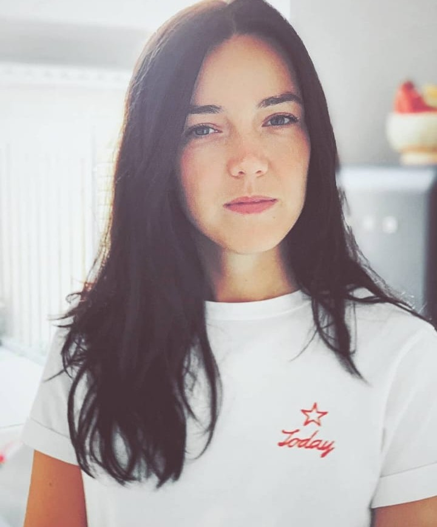
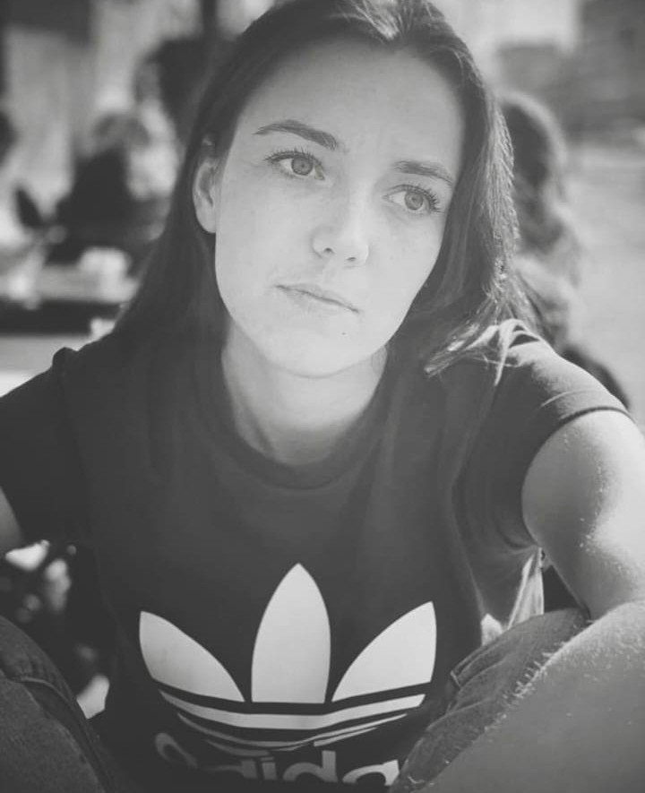

Daniëlle de Wilde
Drijvende kracht achter Hazy Standard. Documentairemaker, verhalenverteller en onderzoeker van de menselijke maat.
Als grafisch vormgever en creatieve duizendpoot verken ik de grens tussen beeld en waarheid. Ik heb geen journalistieke achtergrond, maar schrijf en onderzoek vanuit een pure behoefte om te begrijpen. Mijn werk is een continue zoektocht naar de essentie; ik duik tot de kern om ruis te filteren en verhalen zichtbaar te maken die er écht toe doen.
Creativiteit: Van binnen naar buiten
Voor mij is creativiteit geen luxe, maar een noodzaak. Ik geloof in 'van binnen naar buiten leven': handelen vanuit je eigen kern. Door het vastleggen van reportages geef ik een stem aan wat vaak ongehoord blijft. Ik breek open vanuit verbinding en waarheid om zo bij te dragen aan een verzachtende wereld.

Samen de kern blootleggen?
Ik sta altijd open voor nieuwe projecten die onze wereld een stukje eerlijker en transparanter maken. Laten we kijken wat we samen kunnen creëren. Ik werk graag aan projecten die veiligheid, creativiteit en oprechtheid uitstralen.
Neem contact op